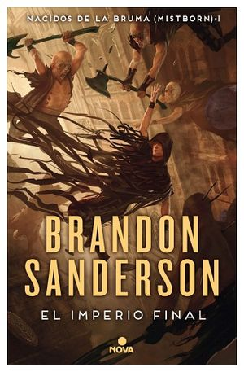

Nacidos de la bruma

Durante mil años han caído las cenizas y nada florece. Durante mil años los skaa
han sido esclavizados y viven sumidos en un miedo inevitable. Durante mil años el Lord Legislador reina
con un poder absoluto gracias al terror, a sus poderes e inmortalidad. Le ayudan «obligadores» e
«inquisidores», junto a la poderosa magia de la «alomancia». Pero los nobles a menudo han tenido trato
sexual con jóvenes skaa y, aunque la ley lo prohíbe, algunos de sus bastardos han sobrevivido y heredado
los poderes alománticos: son los «nacidos de la bruma» (mistborns). Ahora, Kelsier, el «superviviente»,
el único que ha logrado huir de los Pozos de Hathsin, ha encontrado a Vin, una pobre chica skaa con mucha suerte...
Tal vez los dos, unidos a la rebelión que los skaa intentan desde hace mil años, logren cambiar el mundo y la
atroz dominación del Lord Legislador.